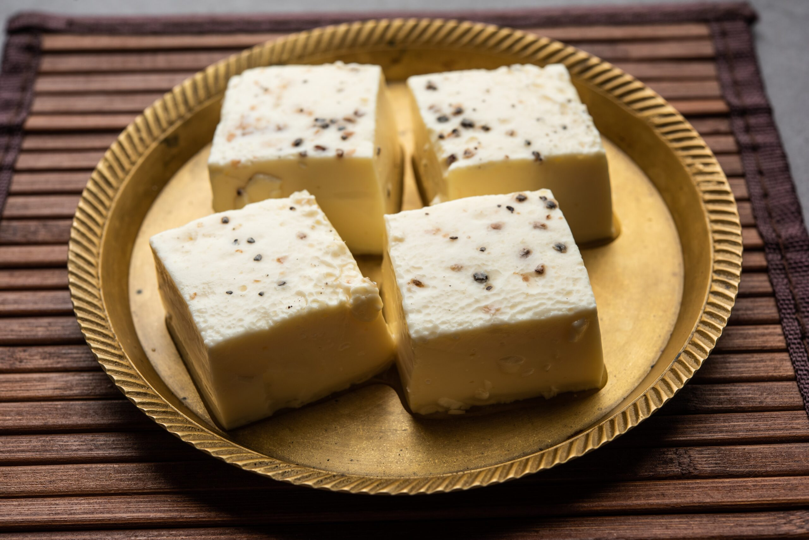

Desserts & Sweets in Pune
Pune is not just spicy – it's also sweet! Explore iconic local desserts that satisfy every sweet tooth. From creamy Shrikhand to crispy Jalebi, this section celebrates Pune's most delightful desserts.
🌟 Sweet of the Day
🬠Sweet Highlights
🧠Shrikhand is often served with hot puris during festivals!
🰠Sweet Specialties

Kharvas
Milk pudding made from colostrum milk
📠Deccan
Ukdiche Modak
Steamed rice dumpling filled with jaggery and coconut
📠Shaniwarwada
Puran Poli
Sweet flatbread stuffed with chana dal and jaggery
📠Tilak Road
Karanji
Crescent-shaped sweet dumplings with coconut filling
📠Tilak Road
Gulab Jamun
Deep-fried milk balls soaked in sugar syrup
📠Camp Area
Rasgulla
Spongy cottage cheese balls in light sugar syrup
📠FC Road
📠Sweet Spots in Pune
VIDEO
Sadashiv Peth
Famous for traditional Maharashtrian sweets like Shrikhand & Basundi.
📸 Sweet Gallery
ğŸ Sweet Facts
🧠Shrikhand is often served with hot puris during festivals
🮠Kharvas is made using the first milk after a cow gives birth!
🬠Modaks are Lord Ganesha's favorite sweet
🥠Jalebis are best eaten fresh, early in the morning!
🥛 Basundi is traditionally served in clay pots
🌰 Puran Poli is a festival favorite during Holi
💬 Sweet Words from Locals
"Shrikhand from Sadashiv Peth reminds me of childhood festivals." – Aarti J.
"The Modaks here are just divine!" – Rahul D.
"Best Gulab Jamun in Pune at Camp Area!" – Priya M.
⬅ Back to Main Page